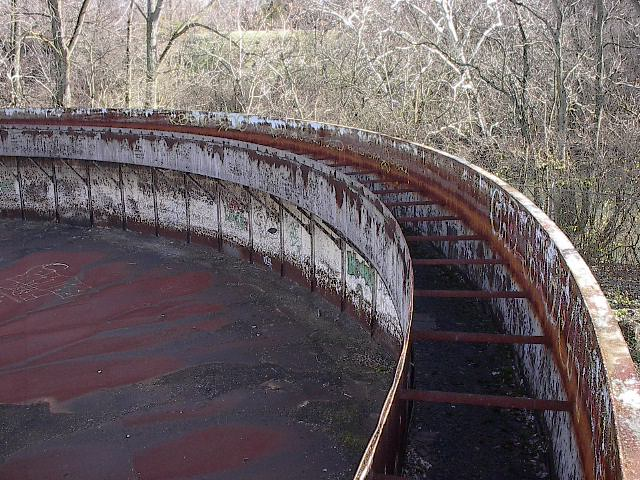

Here's an interesting abandoned Columbus building: the water plant on Nelson Road. I had heard of this place from Rookie, but it wasn't until another friend took me there that I had even seen it. We ended up there one chilly evening in December of 2001.
As you can tell, this building has been abandoned for a while and hit heavily by the graffiti artists. Even COUP, Columbus's graffiti superstar, has placed his tag prominently on the upper level.
The building is big and hollow and made of concrete. Junk all over the floor, lots of graffiti. At one end the second floor was still intact, but in the main room there had been a walkway which was now long gone. There was still an empty doorway.
But the coolest stuff we came across was out back. That's where the two big round things were. What they're really called I don't know.
The taller of the two round things was big and looked something like a silo of some sort. We couldn't get inside it. It did have a ladder going up the side, but standing on top would have made us highly visible to the freeway which runs right beside this plant. Still, I might have tried it if it hadn't been so damn cold.
The really cool part (in my opinion, anyway) was the huge mixing thing attached to the back of the water plant. Round and huge, the thing is like an enormous above ground pool.
Inside, the mixing thing is a circular dish about 200 feet in diameter. You have to climb a ladder to get to the top of the wall, and then climb another one down to walk around on the bottom of the thing. The floor of it is actually kind of scary, because it seems to be made of rotten, flexible boards. Makes me wonder how it ever held water. Unless maybe this was a different kind of plant and I'll have to change the title on this page and everything. How crappy would that be?

Another feature of the big water pool in the back was the mixing bar, which spanned the diameter of the circle and spun from the center. My nearly complete college education tells me this was obviously used to mix the water or whatever was in here by spinning around. There was a metal walkway along the top of the mixing bar, which I can only imagine would have been incredibly fun to ride on while it was operating.
This is a very cool place, although it's obviously been discovered about a thousand times by graffiti artists and other people. The city keeps re-locking the gates out front, but squeezing through is no problem at all. If you'd like to see it, go to the place where I-670 passes over Nelson Road. And if you think you can get that mixer thing working, please contact me.
Back